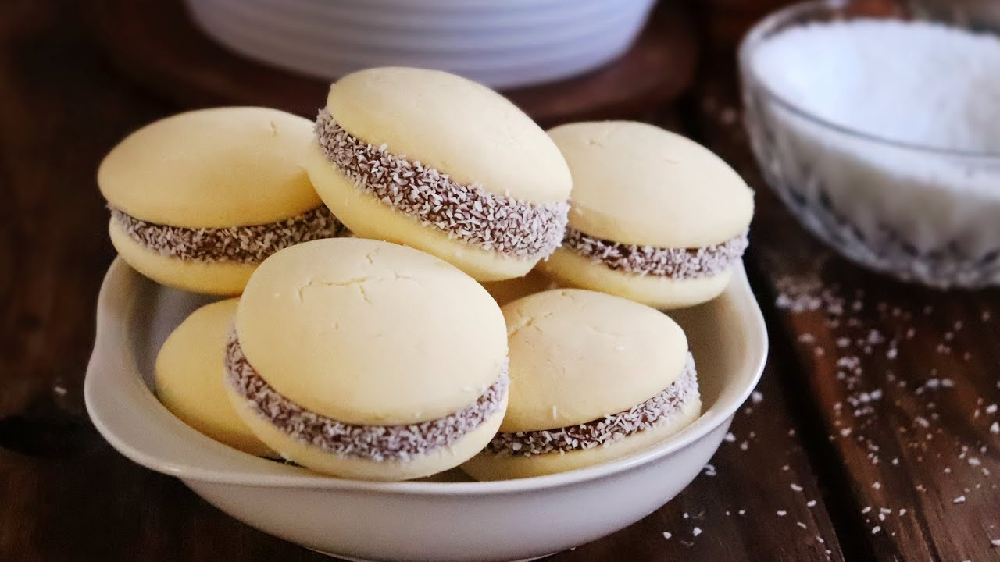

Alfajores with Dulce de Leche

These bite-sized snacks are filled with creamy dulce de leche and rolled in shredded coconut.
Ingredients
- 1 1/2 cups all-purpose flour
- 2 1/4 cups cornstarch
- 2 tsp baking powder
- 1/2 tsp baking soda
- 3/4 cups unsalted butter. Softened.
- 3/4 cup granulated sugar
- 3 large eggs. Separate yolks and whites. We'll only be using the yolk.
- 2 tsp vanilla extract
- 1 cup dulce de leche
- 1/2 cup unsweetened shredded coconut
Instructions
- In a medium bowl, sift together flour, cornstarch, baking powder, and baking soda. Set aside for later.
- Fix a stand mixer with a paddle. Beat butter and sugar on medium until it is light and fluffy (approx. 3-minutes).
- Add in egg yolks and vanilla extract. Beat at low speed until the mixture is combined.
- Add flour mix that was set aside. Continue to beat at low speed until the mixture is combined. Do not over-mix or the dough will become tough.
- Form the dough into one large ball. Then flatten into a disk.
- Cover in plastic wrap and refrigerate for 1-2 hours until the dough becomes firm. You can store the dough for up to 3-days or freeze for up to one month. Simply thaw in the refrigerator overnight.
- Remove the dough from the refrigerator and allow to warm for a few minutes.
- On a lightly floured surface, roll the dough to between 1/8 and 1/4 inches.
- Cut the dough into 2-inch circles. Place the cuts onto baking sheets lined with parchment paper. You may re-roll dough scraps to make additional cookies.
- Place cookie sheets into the refrigerator for about 15-minutes or until the cookies are firm. This will reduce spreading.
- Preheat oven to 350°F. Bake cookies for 7-10 minutes or until the cookies are golden brown along the edges.
- Allow the cookies to cool in the pan for 10-minutes before transferring to a wire rack.
- Add a small spoonful (approx. 1 tsp) of dulce de leche to half of the cookies. Cover with the other half and press until the dulce de leche bulges from the sides.
- Roll the sides of the cookies in coconut.
- Cookies can be stored at room temperature for up to a week or frozen for up to two months. To thaw, simply leave at room temperature for a few hours.